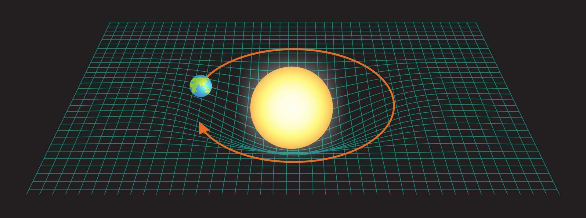
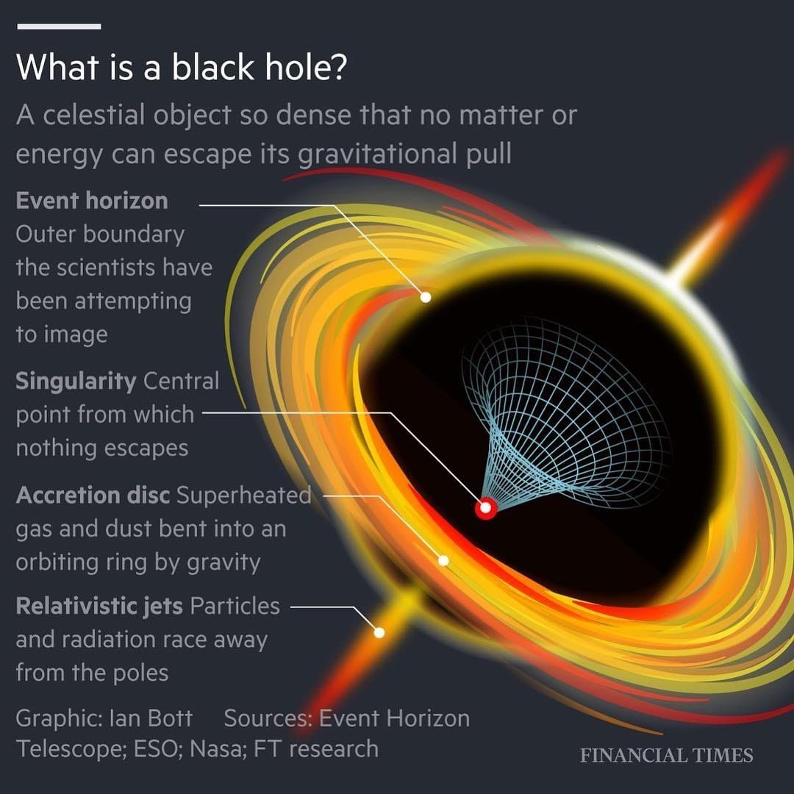
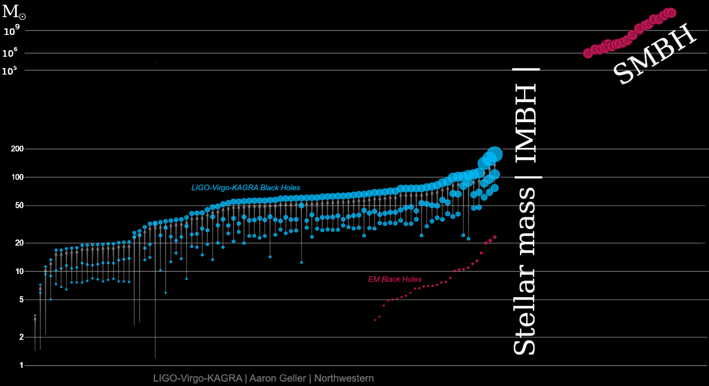

Reading: Chapter S2, 20, 21
Recap and aims of this lecture
We have seen that galaxies come in many shapes, they are typically out of dynamical equilibrium because of the constant perturbations by nearby galaxies in their host galaxy cluster.
Typically the vast majority of their mass is in the form of "dark matter", which forms a (as far as we know) spherical halo much bigger than the galaxy itself.
We have seen that in the center of the MW (the galaxy that hosts the solar system), there is a "supermassive BH" (SMBH) called Sag A*, with mass \(M\simeq4\times10^{6}\,M_{☉}\).

This was first inferred from the Keplerian motion of stars in the innermost part of the galaxy, which constrain the total mass and the maximum extent of this mass distribution. Later, the tenuous accretion disk around it was resolved through radio-interferometry by EHT.
Sag A* was actually the second SMBH imaged by EHT, after they released this image of the accretion disk and the shade of the BH in the galaxy M87 (one of the 110 objects in the Messier catalog!):

These two SMBH and host galaxies (MW and M87) can both be imaged by EHT: the resolution it can achieve is of ∼25 μ arcsecond (recall 1 arcsec = 1/60 arcminutes and 1 arcminute = 1/60 degrees). In the MW, Sag A* has a mass of \(4\times10^{6}\,M_{☉}\) and distance of \(D\sim 8\,\mathrm{kpc}\), while M87 has a much more massive BH of \(6\times10^{9}\,M_{☉}\) and is at a distance of \(D\sim16\,000\,\mathrm{kpc}\).
The ratio \(M_{\rm SMBH}/D\sim 0.5\times10^{3} M_{☉} \mathrm{pc}^{-1}\) is the same for both these objects! We will see below that the radius of a BH is proportional to it's mass, so \(M_{\rm SMBH}/D\propto R_{\rm SMBH}/D\): Sag A* and M87 SMBH have the same angular size on the sky, making them both viable targets for EHT.
What is a black hole?
Until the ∼ late 1960s, BHs were thought to be a "mathematical curiosity", a particular solution of Einstein's equations that describe gravity beyond the Newtonian model, with general relativity (GR).
The core idea of general relativity
We cannot derive here GR, but we can focus on the key point that conceptually updates Newton's law of gravity. In Newtonian gravity space-time is a fixed structure in which gravity can propagate at infinite speed: if you remove the Sun, immediately the Earth lacks the centripetal gravitational pull to stay on its orbit and is launched along the tangent.
Einstein (in his "annus mirabilis" 1905) showed however that he could derive all laws of electromagnetism in vacuum postulating that the speed of light in vacuum is the maximum speed for the propagation of information (e.g., the info that the Sun is still there pulling the Earth onto its orbit): this means Newtonian gravity is fundamentally incompatible with special relativity, the theory that correctly describes the dynamics of objects approaching the speed of light.
In 1916, Einstein (and shortly after Hilbert – no lone geniuses, but an active and debating community!) published his theory of general relativity that fixes this problem.
In this picture, gravity is actually an "apparent force" due to the curvature of space-time (much like the centrifugal force in a rotating frame arising because the frame is not inertial): the Earth orbit's the Sun not because of it's attraction working as a centripetal force, but because the Sun's mass curves space time around it and the Earth is trying to "go straight on a curved surface", like the interior of a bowl!

Like any good new theory of something well understood empirically, GR reduces for small masses and low velocities to Newtonian gravity, and extends it to a new framework for large masses and speeds close to the speed of light. Einstein's field equation describes how masses bend space-time and at the same time how space-time imposes to free-falling masses to move (i.e., how masses only under the influence of gravity move):
Black holes
One week only after Einstein's publication, Karl Schwarzschild, from a hospital bed during WWI, published solutions to Einstein's equation for a spherically symmetric space time around a point mass.
N.B.: The assumption of spherical symmetry helps in the calculations! Schwarzschild looked for the simplest solution possible first!
What he found is that there is a region of space around a mass with radius \(r_{g} = \frac{GM}{c^{2}}\) such that it would take infinite energy for an object within this region to escape the gravity of the mass \(M\). In other word, the escape velocity from within this region is faster than \(c\) and no object/information can reach it! This means not even photons can escape this region, and thus the name "black hole".
N.B.: far away from this, \(r\gg r_{g}\) the space-time of Schwarzschild's solution becomes the "flat" spacetime of Newtonian gravity as expected.

So technically, inside a BH matter (but \(E=m\gamma c^{2}\), so all energy) falls towards the center, where "space-time" is "punctured" in GR. This singularity has \(r\rightarrow0\) and \(\rho\rightarrow+\infty\): the appearance of an infinite density suggests that interactions other than gravity will start to play a role: to treat the physics at the singularity we need a model of gravity (described by GR) and the other forces (described by quantum mechanics, QM). These two are still separate field without a synthesis between them: ultimately this suggests that \(\rho\rightarrow+\infty\) is a symptom that we cannot ignore QM anymore but we don't have a better theory to use.
At the even of horizon though (the surface that has escape velocity \(c\)) nothing physically special is happening: if you were passing through the event of horizon, you wouldn't notice anything special (a part from the fact that the gas around you is getting very hot, and gravity is stretching you, these things were happening at \(r_{g}+\varepsilon\) and will continue at \(r_{g}-\varepsilon\) for small distances \(\varepsilon\)).
N.B.: from 1916 (Einstein's first paper and Schwarzschild solution of the equations), it took ∼40 years for Roy Kerr to find a second solution, for a spacetime around a "rotating" point mass in 1963.
BH mass distribution
